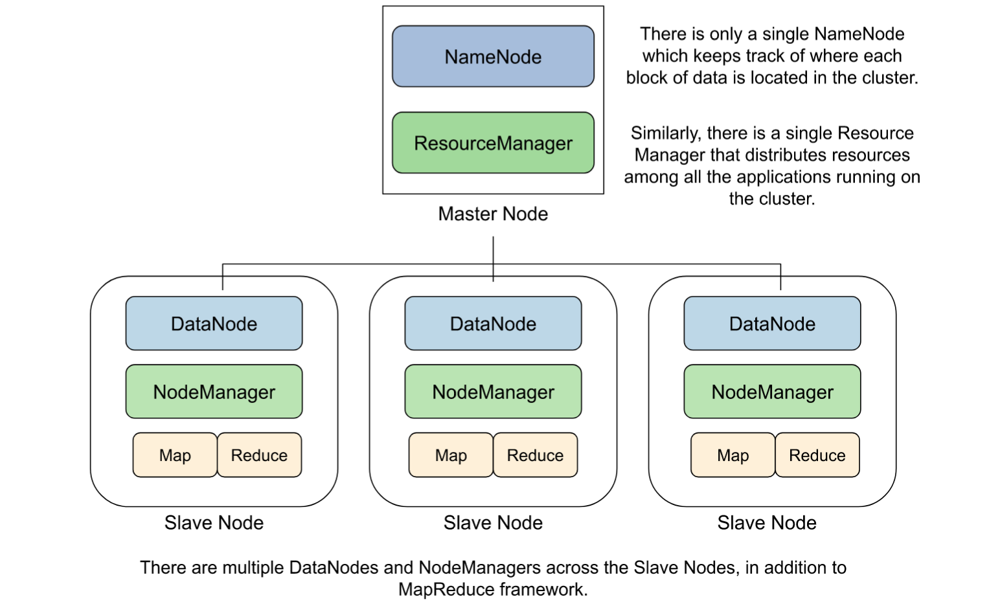

Installing and configuring Hadoop and Spark on a 4 node cluster.
A brief introduction to Hadoop
Apache Hadoop is an open source software library that allows for the distributed processing of large datasets across a computing cluster.
Hadoop shines at processing enormously massive amounts of data that is too big to fit on a single computing system.
Hadoop’s Main Components
Hadoop has components integral to its functioning. These include:
The HDFS (Hadoop Distributed File System)
HDFS is a distributed file system that provides high-throughput access to application data, and is used to scale a single Apache Hadoop cluster to hundreds (and even thousands) of nodes.
HDFS takes massive data files and splits them into smaller chunks called “blocks.” These blocks are typically quite large (often 128 MB or 256 MB), which helps in efficient data management and processing.
These blocks are spread out and replicated across multiple machines in the cluster, ensuring that if one machine fails, the stored data is still safe because there are replicated copies of each block spread across different machines.
HDFS has two components: the NameNode and the DataNode.
The NameNode keeps track of where each block of data is located in the cluster.
The DataNode(s) store the actual data blocks and are spread across the cluster.
YARN (Yet Another Resource Negotiator)
YARN, which stands for Yet Another Resource Negotiator, plays a pivotal role in managing resources and scheduling tasks within the Hadoop architecture. It consists of two primary components: the ResourceManager (RM) and the NodeManager (NM).
YARN effectively distributes computing resources and manages job scheduling across various applications running on the Hadoop cluster.
The ResourceManager is the central decision-maker for resource allocation and is responsible for fairly distributing resources among all the applications running on the cluster.
The NodeManager is responsible for managing resources on a per-machine basis.
MapReduce
MapReduce is a programming model and processing framework that divides big data tasks into smaller sub-tasks, processes them in parallel across a cluster, and then combines the results.
Mapping:
- Data is split into chunks and assigned to “mappers.”
- Mappers process data and produce intermediate key-value pairs.
Shuffling and Sorting:
- Intermediate pairs are sorted and grouped by keys.
- Data with the same key is grouped together.
Reducing:
- Grouped data is sent to “reducers.”
- Reducers process the data, performing operations and producing final results.
Hadoop Common
Hadoop Common provides essential fundamental libraries and utilities for different components within the Hadoop architecture. It serves as a shared resource that supports the entire Hadoop framework.

Installing Hadoop on a 4 node cluster
Prerequisites:
To begin with, the 4 clusters require a Unix-like operating system.
Furthermore, while not essential, using Ansible enormously reduces the time needed to configure and install HDFS with the aforementioned components.
In my previous blog post, I described how to use Ansible (deployed via a Docker container) to remotely configure a computing cluster. This obviates the need for Ansible itself to be installed on the head node. For details on how to use Ansible to configure a cluster, please refer my previous blog post.
I used Ansible to perform all of the tasks detailed in this blog post. While this post describes the general steps needed for installing Hadoop, the next blog post will have the Ansible playbooks posted so as to describe each step of the process in more detail.
JDK 8
Ensure that each cluster node has OpenJDK installed.
Note that if this is being installed using the yum package manager, the EPEL (Extra Packages for Enterprise Linux) repository needs to be imported and activated.
SSH (Secure Shell) and PDSH
Hadoop requires SSH and PDSH to be installed on each node of the cluster. Communication between nodes is done via Hadoop.
Also, ensure that each node can SSH into every other node without a password prompt. This will require performing an SSH Key exchange between every node of the cluster and every other node. (Refer to my blog post about using Ansible to remotely configure a cluster for more details on SSH key exchanges.)
Pro-tip! On my RHEL 8 head node, I ran into a lot of erros from using pdsh since it didn’t come with SSH incorporated. I used dnf to download pdsh-rcmd-ssh after installing pdsh using yum.
Update your .bashrc or .bash_profile file with the following:
export PDSH_RCMD_TYPE=sshPython 3.9
While not a hard requirement for just Hadoop, we intend to install Spark, and use Python to interact with the Scala API, using Jupyter Notebook as the driver.
Jupyter Notebook
Once Python is installed, run python3 -m pip install --upgrade pip in order to upgrade pip, and then install Jupyter using pip install jupyter.
Installing Hadoop and Spark
Downloading and Unzipping Hadoop
Download a recent stable release from one of the Apache Download Mirrors for Hadoop. (I downloaded Hadoop 3.3.6.)
Unzip the downloaded tarball.
Downloading and Unzipping Spark
Download a recent stable release from one of the Apache Download Mirrors for Spark. (I downloaded Spark 3.3.2 to be compatiable with Hail and Glow.)
Unzip the downloaded tarball.
Configuring Hadoop and Spark
In your .bashrc or bash_profile, update the locations of Java, Hadoop and Spark to your PATH.
Update the locations of HDFS, MapReduce and Common.
Reload the terminal.
export HADOOP_HOME=/opt/hadoop-3.3.6
export PATH=$PATH:$HADOOP_HOME/bin
export PATH=$PATH:$HADOOP_HOME/sbin
export HADOOP_MAPRED_HOME=${HADOOP_HOME}
export HADOOP_COMMON_HOME=${HADOOP_HOME}
export HADOOP_HDFS_HOME=${HADOOP_HOME}
export HADOOP_YARN_HOME=${HADOOP_HOME}
export JAVA_HOME=/usr/lib/jvm/java-1.8.0-openjdk-1.8.0.382.b05-2.el8.x86_64
export LANG=en_US.UTF-8
export TZ=UTC
export CLASSPATH_PREPEND_DISTCACHE=
export SPARK_HOME=/opt/spark-3.3.2-bin-hadoop3
export PATH=$PATH:$SPARK_HOME/bin
export HADOOP_CONF_DIR=/opt/hadoop-3.3.6/etc/hadoop
export LD_LIBRARY_PATH=/opt/hadoop-3.3.6/lib/native:$LD_LIBRARY_PATH
export PYSPARK_DRIVER_PYTHON=jupyter
export PYSPARK_DRIVER_PYTHON_OPTS="notebook --NotebookApp.open_browser=False --NotebookApp.ip='localhost' "
export PATH=$PATH:/usr/local/binUpdating the Hadoop configuration files
The following configuration files need to be edited across the cluster.
- hadoop-env.sh
This file can be found in your installation directory. Assuming the name of the directory hadoop was unzipped to is /hadoop, the file can be found at /hadoop/etc/hadoop/hadoop-env.sh.
Add the following line to the file in order to add the location of the Java installation to Hadoop:
export JAVA_HOME=/usr/lib/jvm/java-8-openjdk-amd64/Note that the name/location of the Java installation can change depending on your system.
- workers
Edit the workers file to add the names of your cluster. Note that this requires the names of the nodes with their IP addresses to be present in the /etc/hosts file.
- core-site.xml
This file can be found in your installation directory. Assuming the name of the directory hadoop was unzipped to is /hadoop, the file can be found at /hadoop/etc/hadoop/core-site.xml.
Insert this code block between <configuration> and </configuration>.
<property>
<name>fs.defaultFS</name>
<value>hdfs://namenode:9000</value>
</property>- hdfs-site.xml
This file can be found in your installation directory. Assuming the name of the directory hadoop was unzipped to is /hadoop, the file can be found at /hadoop/etc/hadoop/hdfs-site.xml.
Insert this code block between <configuration> and </configuration>.
<property>
<name>dfs.namenode.name.dir</name>
<value>/home/temp/data/nameNode</value>
</property>
<property>
<name>dfs.datanode.data.dir</name>
<value>/home/temp/data/dataNode</value>
</property>
<property>
<name>dfs.replication</name>
<value>4</value>
</property>- yarn-site.xml
This file can be found in your installation directory. Assuming the name of the directory hadoop was unzipped to is /hadoop, the file can be found at /hadoop/etc/hadoop/yarn-site.xml.
Insert this code block between <configuration> and </configuration>.
<property>
<name>yarn.nodemanager.aux-services</name>
<value>mapreduce_shuffle</value>
</property>
<property>
<name>yarn.nodemanager.env-whitelist</name>
<value>JAVA_HOME,HADOOP_COMMON_HOME,HADOOP_HDFS_HOME,HADOOP_CONF_DIR,CLASSPATH_PREPEND_DISTCACHE,HADOOP_YARN_HOME,HADOOP_HOME,PATH,LANG,TZ,HADOOP_MAPRED_HOME</value>
</property>
<property>
<name>yarn.resourcemanager.hostname</name>
<value>(namenode IP Address)</value>
</property>
<property>
<name>yarn.acl.enable</name>
<value>0</value>
</property>- mapred-site.xml
This file can be found in your installation directory. Assuming the name of the directory hadoop was unzipped to is /hadoop, the file can be found at /hadoop/etc/hadoop/mapred-site.xml.
Insert this code block between <configuration> and </configuration>.
<property>
<name>mapreduce.framework.name</name>
<value>yarn</value>
</property>
<property>
<name>yarn.app.mapreduce.am.env</name>
<value>HADOOP_MAPRED_HOME=$HADOOP_HOME</value>
</property>
<property>
<name>mapreduce.map.env</name>
<value>HADOOP_MAPRED_HOME=$HADOOP_HOME</value>
</property>
<property>
<name>mapreduce.reduce.env</name>
<value>HADOOP_MAPRED_HOME=$HADOOP_HOME</value>
</property>
<property>
<name>mapreduce.application.classpath</name>
<value>$HADOOP_MAPRED_HOME/share/hadoop/mapreduce/*,$HADOOP_MAPRED_HOME/share/hadoop/mapreduce/lib/*,$HADOOP_MAPRED_HOME/share/hadoop/common/*,$HADOOP_MAPRED_HOME/share/hadoop/common/lib/*,$HADOOP_MAPRED_HOME/share/hadoop/yarn/*,$HADOOP_MAPRED_HOME/share/hadoop/yarn/lib/*,$HADOOP_MAPRED_HOME/share/hadoop/hdfs/*,$HADOOP_MAPRED_HOME/share/hadoop/hdfs/lib/*</value>
</property>Updating the Spark configuration files
Rename spark-defaults.conf.template to spark-defaults.conf. The file can be found at spark-3.3.2-bin-hadoop3/conf/spark-defaults.conf.template.
Replace
spark.master spark://master:7077with
spark.master yarnStarting the HDFS and YARN services
Once the configuration files are edited and the PATH is updated, the HDFS namenode can be formatted by running hdfs namenode -format.
The HDFS node services can be initiated by running start-dfs.sh.
YARN can be initiated by running start-yarn.sh.
Ensure that these services are running by running the jps command.
The head node will have the services NameNode and ResourceManager running. Remember that these services run only on the head node.
If used as a data node, it will also have the services DataNode and NodeManager running on it.
The slave nodes will have DataNode and NodeManager running on it.
Monitoring the services
Initiate the history server by running $SPARK_HOME/sbin/start-history-server.sh.
This can be accessed at http://localhost:8088.